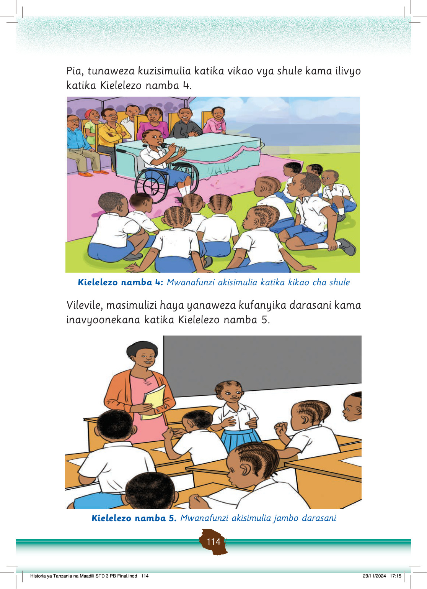

Pia, tunaweza kuzisimulia katika vikao vya shule kama ilivyo katika Kielelezo namba 4.
Mwanafunzi aliyekaa kwenye kiti cha magurudumu anasimulia katika kikao cha shule. Wanafunzi na walimu wanamsikiliza kwa makini.
Kielelezo namba 4: Mwanafunzi akisimulia katika kikao cha shule
Vilevile, masimulizi haya yanaweza kufanyika darasani kama inavyoonekana katika Kielelezo namba 5.
Mwanafunzi anasimulia jambo darasani mbele ya mwalimu. Wanafunzi wengine wanamsikiliza wakiwa kwenye madawati yao.
Kielelezo namba 5. Mwanafunzi akisimulia jambo darasani
FOR ONLINE USE ONLY
Historia ya Tanzania na Maadili STD 3 PB Final.indd 114
29/11/2024 17:15